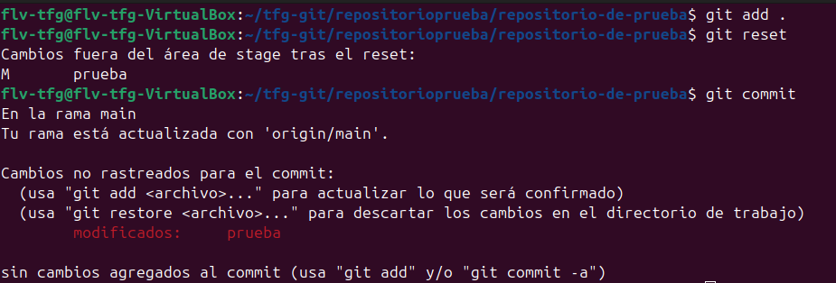
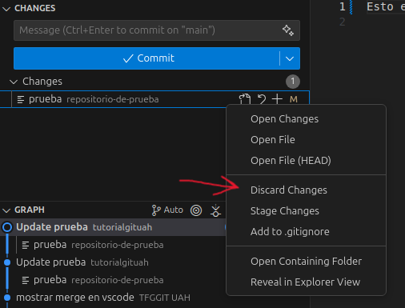

git resetSe utiliza para deshacer cambios en tu repositorio local. Puede deshacer commits, mover el HEAD a un commit anterior, o eliminar cambios del staging area (área de preparación). Es una herramienta poderosa pero requiere cuidado al usarla.

Dentro de la carpeta ejecutamos lo siguiente:
git reset
Esto deshace todos los cambios en el staging area (aquellos archivos que habías hechogit add), pero mantiene los cambios en tu directorio de trabajo. Los archivos vuelven a estar "sin preparar".
Los tres modos principales de git reset:
--soft: Deshace el commit pero mantiene los cambios en el staging area (preparados). Es útil cuando quieres rehacer el commit:
git reset --soft HEAD~1
--mixed (por defecto): Deshace el commit y saca los cambios del staging area, pero los mantiene en el directorio de trabajo (sin preparar):
git reset --mixed HEAD~1
--hard: Deshace el commit y descarta todos los cambios. ¡CUIDADO! Los cambios se pierden:
git reset --hard HEAD~1
Otros comandos útiles:
Para deshacer cambios en el staging area de un archivo específico:
git reset (nombre del archivo)
Para deshacer múltiples commits pero mantener los cambios:
git reset HEAD~(número de commits)
Para deshacer cambios en un archivo específico a su estado anterior:
git reset (hash del commit) -- (nombre del archivo)

En VSCode, puedes usar `git reset` de varias formas: En el panel de cambios, haz click derecho en el archivo y le das a click a descartar cambios.